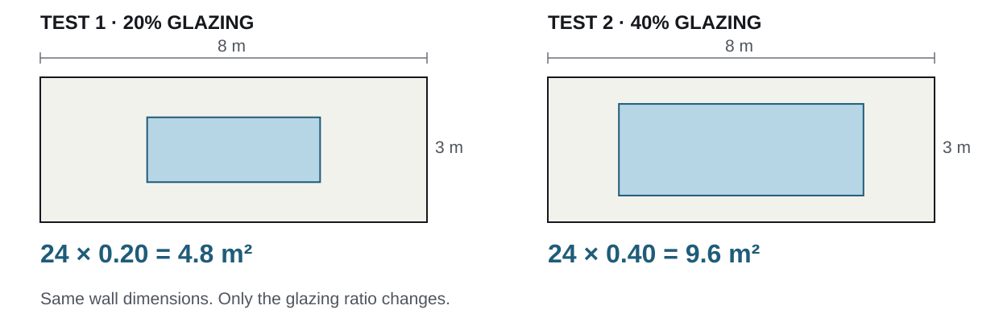

Use A2 feedback to run one test and document the next step
Session 1 · reconnect · 5 minutes
Your submitted A2
The workflow proposal
One design decision, evidence sources, a chosen route, and an intended output.
Your personal website
A place to show the work
We used half of last week’s lab to set up a personal site with GitHub Pages.
Today, connect the two: explain the proposal, test one step, and record what happened.
Session 1: attempt a small test. Session 2: use that attempt in this cycle.
01 · Explain
Open your A2
Show the decision and the route you selected.
02 · Discuss
Choose a response
Use peer feedback to choose what to test next.
03 · Test
Run one step
Save an output or record exactly where it stops.
04 · Document
Update your page
Show the test, its status, and the next action.
Today’s record: one attempted test + one dated feedback/action entry + an updated project page or local draft.
Session 1 · 50 minutes
Understand and prepare
| Minutes | Work |
|---|---|
| 0–5 | Reconnect A2 and the website |
| 5–15 | Define a small, checkable prototype |
| 15–25 | Follow one worked example |
| 25–45 | Attempt a test on your own project |
| 45–50 | Prepare your A2 walkthrough |
Session 2 · 50 minutes
Discuss and revise
| Minutes | Work |
|---|---|
| 0–20 | A2 walkthroughs in groups of three |
| 20–25 | Instructor debrief |
| 25–45 | Apply feedback and update your page |
| 45–50 | Peer page check and Slack exit |
A 10-minute break separates the sessions. All lab times restart at 0 after the break.
01
Session 1 · concepts and worked example
Choose one operation whose input, change, output, and check you can name.
A workflow is the sequence that turns inputs into an output. A prototype is a small working version you can run and inspect.
Input The file, geometry, data, or values you start with.
Change The one variable you alter. State what stays fixed.
Output The value, table, figure, or geometry you save.
Check A specific comparison that can reveal an error.
Make these four labels explicit in your test, walkthrough, and project page.
Check the workflow
Did this step work as intended?
For a 24 m² wall, 20% glazing should give 4.8 m² of window area.
Compare the exported area with that hand calculation.
Interpret the design
Does this result support an action?
Which glazing ratio should we select for the facade?
That needs relevant performance evidence and a stated comparison rule.
A correct area calculation alone does not establish daylight or cooling performance.
| Label on your page | What it means | What to record |
|---|---|---|
| Planned | You have not run this test. | Intended input, change, output, and check. |
| Attempted · blocked | You tried; a specific step stopped the run. | Failed step, error or symptom, and next repair. |
| Output saved | The run produced an output you can show. | Output file and check result: passed, failed, or pending. |
Week 7 completion: attempt a test. A documented blocker is a valid clinic outcome. A plan alone still needs an attempt.
| Route | One small operation | One check to record |
|---|---|---|
| Spreadsheet | Change one parameter; recalculate a row. | Recalculate that row by hand. |
| GIS | Run one buffer or overlay. | Inspect CRS, units, and one known location. |
| Python / notebook | Run one function on a small input. | Compare with a known expected value. |
| Grasshopper | Change one slider; export geometry or area. | Check units and one dimension or area. |
| BIM/BEM / simulation | Run one simplified case. | Inspect input settings and run warnings. |
| AI-assisted component | Run and inspect the generated step. | Check its result independently of the AI answer. |
Use the route selected in your A2. Starter kits are available if you need a runnable starting point.
Teaching example · calculated geometry · no performance results
A2 proposal
Compare glazing ratios
Explore 20%, 40%, and 60% glazing for the same facade.
Clinic feedback
Check the geometry first
Can the workflow generate and export the area you intended?
Week 7 test
Calculate two cases
Fix the wall at 8 m × 3 m. Change only the glazing ratio.
The first test checks the geometry step before adding performance analysis.

Input Wall width 8 m; height 3 m.
Change Glazing ratio: 0.20 → 0.40.
Output Window area in m² for each case.
Check Compare exported area with 24 × ratio.
Illustrative record · arithmetic shown for teaching
| Glazing ratio | Calculated window area | Independent check | Status |
|---|---|---|---|
| 20% | 4.8 m² | 8 × 3 × 0.20 = 4.8 m² | Output saved; check passed |
| 40% | 9.6 m² | 8 × 3 × 0.40 = 9.6 m² | Output saved; check passed |
| 60% | — | Check when this case is run. | Planned |
What this supports: the two area calculations match the intended ratios.
What remains open: daylight, cooling, and the choice of a facade option.
Next action: add the third case, then connect the geometry to a justified performance method for A3.
ARCH7476 project section · illustrative entry
Decision
Which glazing ratio should I carry forward for this facade?
Workflow
Input: 8 × 3 m wall. Change: glazing ratio. Output: window area. Check: 24 × ratio.
Test record
20% → 4.8 m²; 40% → 9.6 m². Area checks passed. Performance analysis is still planned.
Feedback → action
Week 7 · [enter date]. “Check geometry first.” I added an area check. Next: test 60%.
Link the result to its source file and run instructions. Keep the test date and limits visible.
Session 1 · minutes 25–45 · individual work · 20 minutes
Open your A2 PDF and the file or tool for your selected workflow.
Done when: you can show a test record with an output or a specific blocker. Keep it open beside your A2.
| Situation | Do this now | Keep this evidence |
|---|---|---|
| The file opens but the run fails. | Repeat the smallest failing step once; record what happens. | Input, command/component, and error or symptom. |
| A required tool or input is missing. | Name it; attempt one hand-checkable row or calculation using available input. | Small calculation, its assumptions, and the missing dependency. |
| GitHub Pages is not live. | Edit the same project content in local index.html or a document. |
Local page/document and a screenshot for Slack. |
Write a repair action: “Next I will ; I will know it worked when .”
A hand calculation checks a limited step. Label which part of the intended workflow remains untested.
Session 1 · minutes 45–50 · individual preparation · 5 minutes
Mark the relevant page or diagram in your submitted PDF. Keep your test record beside it.
| Speaking time | Show and explain |
|---|---|
| 0:00–1:00 | The design decision, chosen evidence, and one evidence limit. |
| 1:00–2:00 | Why this workflow fits. Identify Input, Change, Output, and Check. |
| 2:00–3:00 | Today’s output or blocker. End with one specific question. |
Ready when: the PDF and test record are open, and your question names a decision, assumption, or failed step.
First 2 minutes: review the speaking and feedback protocol together. Next 3 minutes: prepare your own explanation. Listeners will clarify a problem, propose a test, then let you record a response.
Use your existing A2 pages. No new presentation deck is needed.
10 minutes
After the break: Session 2 starts at lab minute 0.
Keep these open: A2 PDF · test record · personal site or local draft.
02
Session 2 · first 20 minutes
Every student gets a turn to explain the submitted proposal and discuss the next test.
Lab minutes 0–20 · groups of three
| Lab time | Who explains? | What happens? |
|---|---|---|
| 0–2 min | Everyone | Form groups and choose order: A, B, C. |
| 2–8 min | Student A | 3 minutes explaining + 3 minutes of peer feedback. |
| 8–14 min | Student B | 3 minutes explaining + 3 minutes of peer feedback. |
| 14–20 min | Student C | 3 minutes explaining + 3 minutes of peer feedback. |
The two listeners share the three-minute feedback period. One keeps time; the speaker records the advice.
If you are a pair: use two six-minute turns, then use the remaining six minutes to sharpen both next-test plans. Do not form a group of four.
Speaker · show the A2 PDF and today’s test record
Point to the work while you explain. Make the uncertain step visible.
Listeners · 3 minutes total, shared by both peers
| Time within feedback | Say or do this |
|---|---|
| First minute | Clarify: name one assumption, missing input, or scope problem. Ask the speaker to confirm it. |
| Second minute | Propose: suggest one change and the output or check that would make it useful. |
| Third minute | Record: the speaker chooses advice to use, defer, or reject, and states why. |
Example feedback: “Before the energy run, compare exported window area with your intended ratio.”
Example response: “I will add that area check. I will defer annual simulation until the geometry export is consistent.”
Capture: date · feedback source · what it challenged · your response and reason · next test.
Lab minutes 20–25 · whole class · 5 minutes
The instructor will address recurring issues from the walkthroughs.
Write one sentence before returning to your file:
“Because the feedback challenged , I will change , run , and check .”
If you retain your approach, state why and choose a test of that choice or a stronger check.
Done when: the change is small enough to attempt in the next 10 minutes.
03
Session 2 · lab minutes 25–45
Respond to one feedback point with a test. Then show the result and next action on your project page.
Lab minutes 25–45 · individual work · 20 minutes
25–35 · test
Act on one feedback point
Record the check as passed, failed, or pending.
35–45 · document
Update your existing site
Use a local draft if publishing is still blocked.
Done when: another person can see what you attempted, what happened, and what you will do next.
Use the site you started last week. Add a section titled ARCH7476; use an existing course project page if you already have one.
| Section | Add this content today |
|---|---|
| 1. Decision + A2 | One-sentence decision and the relevant A2 workflow diagram. |
| 2. Workflow | Input · Change · Output · Check, plus the tool and source-file location. |
| 3. Test record | Date, test status, and one output image/table or exact blocker. |
| 4. Check + limit | What you checked, its outcome, and what remains untested. |
| 5. Feedback + next action | Source, challenge, response/reason, and the next test. |
Keep the source accessible: link the artifact and run instructions, or state their course submission location if they cannot be published.
Use your existing GitHub Pages repository
Page check: the text is visible, the image loads, and the linked file or stated file location is usable.
The page explains the workflow. The workbook, script, notebook, or project file supplies the runnable artifact for A3.
Lab minutes 45–48 · pairs · 3 minutes
Exchange the URL or open the local draft for your partner. Spend 90 seconds on each person’s page.
For an odd remaining group of three, rotate through the three pages together: 60 seconds per page.
Can your partner find:
Partner’s response: “I found ; I could not find .” Mark any missing item for repair.
This checks whether the page communicates the work. A full rerun from the files is part of the Week 8 verification work.
Lab minutes 48–50 · individual · 2 minutes
Post one message in the course Slack channel used for Session 2:
Project page: URL, or attach a screenshot of the local draft.
Test: I changed ; the output/blocker was .
Check: ___; result: passed / failed / pending.
Feedback → response: ___ challenged ; I used/deferred/rejected it because .
Next test: ; I will check .
Before leaving: save the page/draft, the source artifact or blocker note, and the dated feedback entry.
| When | What you produce |
|---|---|
| Week 7 · today | One attempted test, an output or blocker, and a feedback/action entry on your page or local draft. |
| Week 8 | Rerun and verification work: instructions, dependencies, manual checks, and failure notes. |
| End of Week 9 · A3 due | PDF + a runnable artifact, at least three variants/scenarios/alternatives, an interpretable output, and verification/failure log. |
| A4 | A complete workflow package, including the feedback/revision ledger that today’s entry starts. |
The A2 walkthrough and website update are formative class work, not new graded submissions. A1–A4 marks follow the published assignment briefs.
Explain → test → record
One attempted test. One reasoned response to feedback. One visible next action.
End of today’s teaching sequence. The following slides are reference material for your workflow and Week 8.
Reference
Use these prompts when developing the first test into the A3 artifact.
The detailed documentation swap and mentor-question exercises continue in Week 8.
A GH component, spreadsheet formula, or Python function has the same basic contract:
| Route | Function form | Visible change |
|---|---|---|
| Spreadsheet | Formula or decision rule | Selected variant or score changes. |
| GIS / Python | Buffer, overlay, or analysis function | Map, rank, plot, or metric changes. |
| GH / simulation | Cluster, component, or scenario setup | Geometry or performance output changes. |
| AI-assisted | Generated component with review | A tested repair changes the output. |
| A common description | The missing record |
|---|---|
| “I used a plugin.” | Plugin name, version, and required settings. |
| “I changed it until it looked right.” | Parameter values and why they were chosen. |
| “The chart came from another file.” | Source path and the step that produced it. |
| “The model worked last week.” | Saved inputs, environment, and repeatable run steps. |
Traceability lets another person inspect how an output was produced.
Reference exercise · Week 8 preparation · 10 minutes
Choose one operation from your spreadsheet, GIS, notebook, GH, simulation, AI-assisted, or visualization workflow.
Output: a short README another student can follow using the supplied files.
Run instructions
Troubleshooting + check
Explain why a step exists and which assumption it encodes. Preserve the reasoning with the instructions.
Reference exercise · Week 8 verification
If the peer lacks the software: audit the inputs and steps now; record the rerun as pending and arrange a check with access to the required tool.
An explanation that reads clearly is useful. Reproducing the output is the stronger test required for A3.
| Route | Questions to answer in the run instructions |
|---|---|
| Spreadsheet | What table structure is required? Which formula or chart is most fragile? |
| GIS | Which layer preparation is essential? What CRS and operation order are required? |
| Python | Which cells define the logic? What packages, paths, and file assumptions are required? |
| GH / parametric | Which sliders and constraints define the variants? Do they share the same assumptions? |
| BIM/BEM | Which model assumptions dominate the result? Which setup choices must be recorded? |
| AI-assisted | What did AI generate or edit? Which independent check was performed? |
For a workflow that connects two tools, document the transfer:
Export
Name the file, columns or geometry, and units.
Import
Name the receiving tool/component and mapping.
Inspect
Show the resulting value or geometry and check it.
GH example: export a CSV of variant IDs and scores; read the scores into GH; map each score to its intended geometry and check one known variant.
A screenshot documents appearance. It supplies an input only if the next operation actually reads the image.
Change one input within a stated range and compare the outputs.
Record what the test establishes and what it leaves uncertain.
Reference exercise · Week 8 mentor preparation
Write three questions, each attached to a specific file, output, or failed step:
| Question type | Example structure |
|---|---|
| Technical | This operation fails at ___. Which setting or dependency should I inspect? |
| Methodological | This output depends on assumption ___. How could I test its effect? |
| Strategic | My decision needs ___. Which part of this workflow should I narrow or strengthen? |
Bring the artifact that makes the question visible, plus your attempted check and its result.
ARCH7476 · Week 7 · A2 feedback → A3 first test